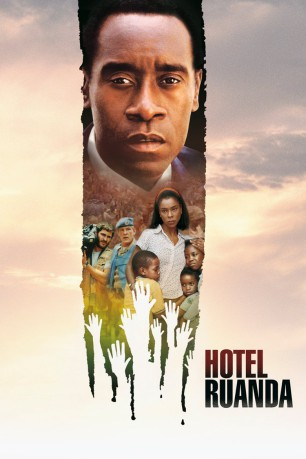

#1221 Hotel Ruanda
Alternativ: Hotel Rwanda
Auszeichnungen: für 3 Oscars nominiert
 
 IMDB-Wertung: 8.1 / 10
IMDB-Wertung: 8.1 / 10  IMDB-TOP-Platzierung: 201
IMDB-TOP-Platzierung: 201  Metascore: 79
Metascore: 79 
Paul Rusesabagina ist Hotelmanager in Ruanda und er ist ein Hutu, verheiratet mit Tatiana, einer Tutsi. Schon lange beobachtet Paul die schwelende Spannung zwischen den ethnischen Gruppen. Wie weit der Hass der Hutu jedoch geht, übertrifft alles, was in der Vorstellungskraft eines Menschen liegen kann. Innerhalb einer Nacht sterben Tausende und nur mit Geld kann Paul sich, seine Familie und ein paar Freunde ins Hotel Mille Collines retten. Doch auch dort sind sie nicht auf Dauer sicher. Geht es Paul zunächst nur darum, seine Familie zu retten, wird ihm bald klar, dass weitaus mehr Menschen seine Hilfe brauchen. Bald wird das Hotel zur letzten Oase der Hoffnung. Am Ende schafft er es tatsächlich über 1000 Flüchtlinge vor dem sicheren Tod zu bewahren.
Jahr: 2004
Dauer: 121 Minuten
FSK: 12
Land: England Studio: TOBIS FilmTonspuren: DTS - ,
Untertitel: Deutsch,
Auflösung: 1080p (1920x816) Größe: 8509 MB
Genre: Biographie, Drama, Geschichte, Krieg
Regisseur: Terry George
Drehbuch: Keir Pearson, Terry George
Soundtrack: Afro Celt Sound System, Rupert Gregson-Williams, Andrea Guerra
Darsteller:
 Don Cheadle als Paul Rusesabagina
Don Cheadle als Paul Rusesabagina Hakeem Kae-Kazim als George Rutaganda
Hakeem Kae-Kazim als George Rutaganda Nick Nolte als Colonel Oliver
Nick Nolte als Colonel Oliver Fana Mokoena als General Bizimungu
Fana Mokoena als General Bizimungu Sophie Okonedo als Tatiana Rusesabagina
Sophie Okonedo als Tatiana Rusesabagina- Antonio David Lyons als Thomas Mirama
- Leleti Khumalo als Fedens
 David O'Hara als David
David O'Hara als David Joaquin Phoenix als Jack Daglish
Joaquin Phoenix als Jack Daglish Cara Seymour als Pat Archer
Cara Seymour als Pat Archer Jean Reno als Mr. Tillens - Sabena Airlines President , uncredited
Jean Reno als Mr. Tillens - Sabena Airlines President , uncredited- Xolani Mali als Policeman
- Desmond Dube als Dube
- Tony Kgoroge als Gregoire
- Rosie Motene als Receptionist
- Neil McCarthy als Jean Jacques
- Mabutho 'Kid' Sithole als Head Chef
- Jeremiah Ndlovu als Old Guard
- Lebo Mashile als Odette
- Kgomotso Seitshohlo als Anais
- Lerato Mokgotho als Carine
- Mosa Kaiser als Elys Rusesabagina
- Mathabo Pieterson als Diane Rusesabagina
- Ofentse Modiselle als Roger Rusesabagina
- Lennox Mathabathe als Peter
- Mothusi Magano als Benedict
- Noxolo Maqashalala als Chloe - Prostitute
- Thulani Nyembe als Jean Baptiste
- Simo Mogwaza als Hutu Captain
- Mirriam Ngomani als Gregoire's Girlfriend
- Harriet Lenabe als Alice the Waitress
- Roberto Citran als Priest
- Mduduzi Mabaso als Hutu Lieutenant
- Sonni Chidiebere als Militiaman
- Thomas Kariuki als Xavier
- Sibusiso Mhlangu als Militiaman
- Ashleigh Tobias als Medic
Datei: X:\2004(G-M)\Hotel Ruanda (2004, FSK12, 1920x816).mkv seit 10.06.2015
Festplatte: HD 2003-2004-2005(A-F)
 Es gibt insgesamt 41 Filme in der Gruppe '2004(G-M)'
Es gibt insgesamt 41 Filme in der Gruppe '2004(G-M)'